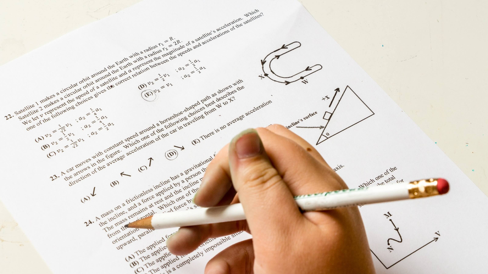

Theory Notes
To download an updated list of Combined Maths theory notes Click Here...
|
SERIES-PART 01 |
SERIES-PART 02 |
SERIES-PART 03 |
SERIES-PART 04 |
REAL NUMBERS-PART 01 |
QUADRATIC FUNCTION-PART 01 |
MATHEMATICAL INDUCTION-PART 01 |
MATHEMATICAL INDUCTION-PART 02 |
MATHEMATICAL INDUCTION-PART 03 |
QUADRATIC FUNCTIONS INDUCTION-PART 01 |
QUADRATIC EQUATIONS-PART 01 |
QUADRATIC EQUATIONS-PART 02 |
QUADRATIC EQUATIONS-PART 03 |
QUADRATIC EQUATIONS-PART 04 |
BIONOMIAL THEOREM-PART 01 |
BIONOMIAL THEOREM-PART 02 |
BIONOMIAL THEOREM-PART 03 |
COMPLEX NUMBERS-PART 01 |
COMPLEX NUMBERS-PART 02 |
COMPLEX NUMBERS-PART 03 |
COMPLEX NUMBERS-PART 04 |
COMPLEX NUMBERS-PART 05 |
COMPLEX NUMBERS-PART 06 |
COMPLEX NUMBERS-PART 07 |
MATRICES-PART 01 |
MATRICES-PART 02 |
PERMUTATIONS AND COMBINATIONS-PART 01 |
PERMUTATIONS AND COMBINATIONS-PART 02 |
PERMUTATIONS AND COMBINATIONS-PART 03 |
PARTIAL FUNCTIONS-PART 01 |
PARTIAL FUNCTIONS-PART 02 |
PARTIAL FUNCTIONS-PART 03 |
PERMUTATIONS AND COMBINATIONS-PART 01 |
PERMUTATIONS AND COMBINATIONS-PART 02 |
PERMUTATIONS AND COMBINATIONS-PART 03 |
PARTIAL FUNCTIONS-PART 01 |
Past Papers
Download the Previous A/L Combined Maths exam papers:
Advanced Level Combined Mathematics I 2010  |
Advanced Level Combined Mathematics II 2010 |
Advanced Level Combined Mathematics I & II 2011 |
Advanced Level Combined Mathematics I & II 2012 |
Advanced Level Combined Mathematics I & II 2013 |
Advanced Level Combined Mathematics I & II 2014 |
Advanced Level Combined Mathematics I & II 2015 |
Advanced Level Combined Mathematics I & II 2016 |
Advanced Level Combined Mathematics I & II 2017 |
Advanced Level Combined Mathematics I & II 2018 |
Advanced Level Combined Mathematics I & II 2019 (New) |
Advanced Level Combined Mathematics I & II 2020 (New) |
To download an updated list of Combined Maths past papers Click Here...
Past papers are the most effective way for students to prepare for the experience of taking an examination.
Solving these Past Papers will help you to prepare for your GCE Advanced Level Combined Maths subject.
Team Past Papers WiKi provides official A/L past papers free of charge in the most convenient way.
